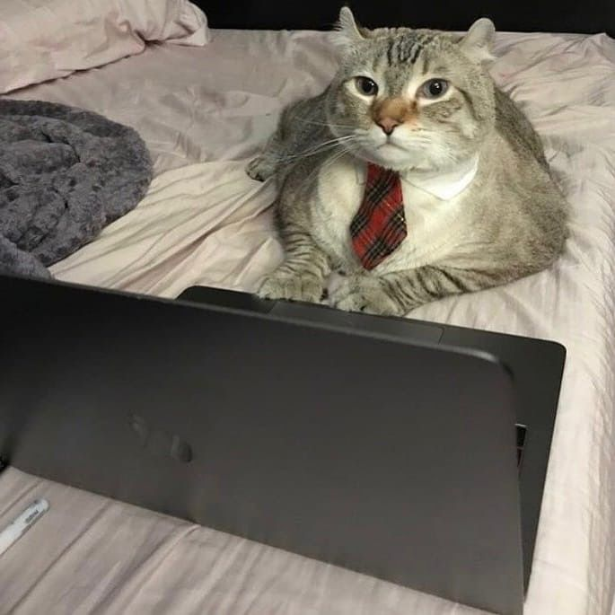

Визитка котэ
Котик, который программирует (иногда)

Интересный факт: кошки могут «подстраиваться» под твой голос — они меняют мяуканье специально для тебя, подстраивая его под твой тон и стиль общения.
Навыки котика-программиста:
- Клацать лапками по клавиатуре в самый важный момент
- Следить за курсором, будто это лазерная указка
- Случайно нажимать правильные клавиши и чинить код
- Греть кружку с кофе, лежа рядом
- Интуитивно чувствовать, где баг
"Я нажал Alt+F4... и всё исчезло. Это было волшебно."
"git push origin meow"